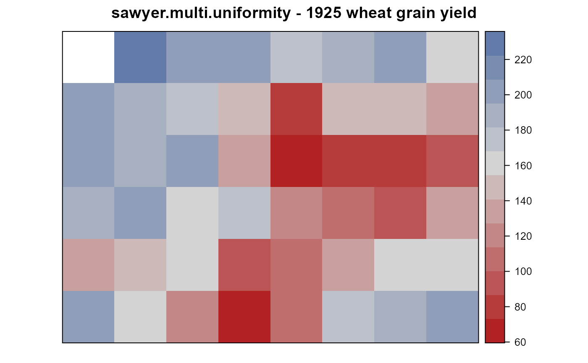
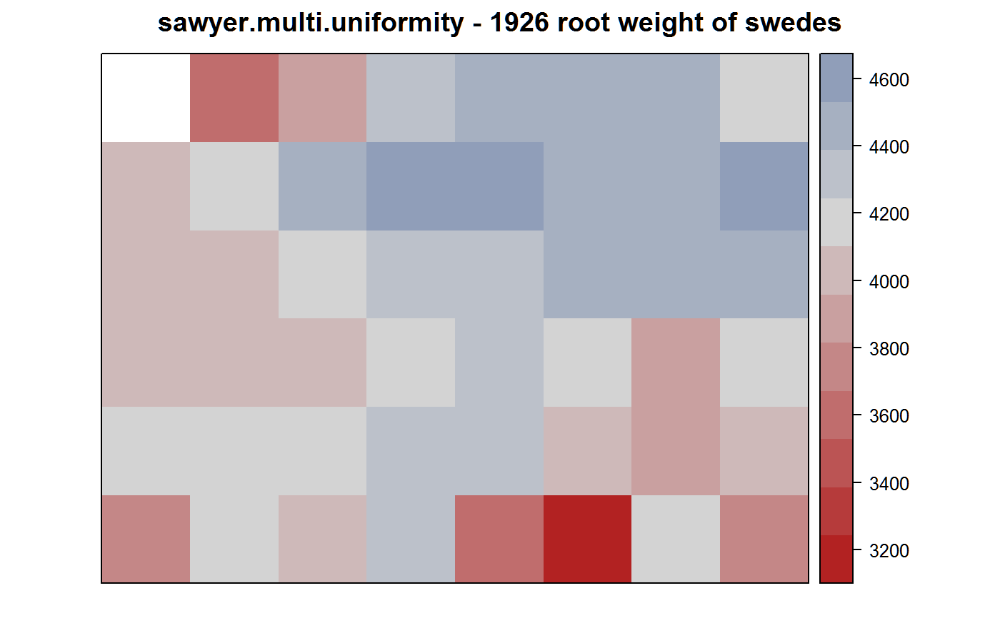
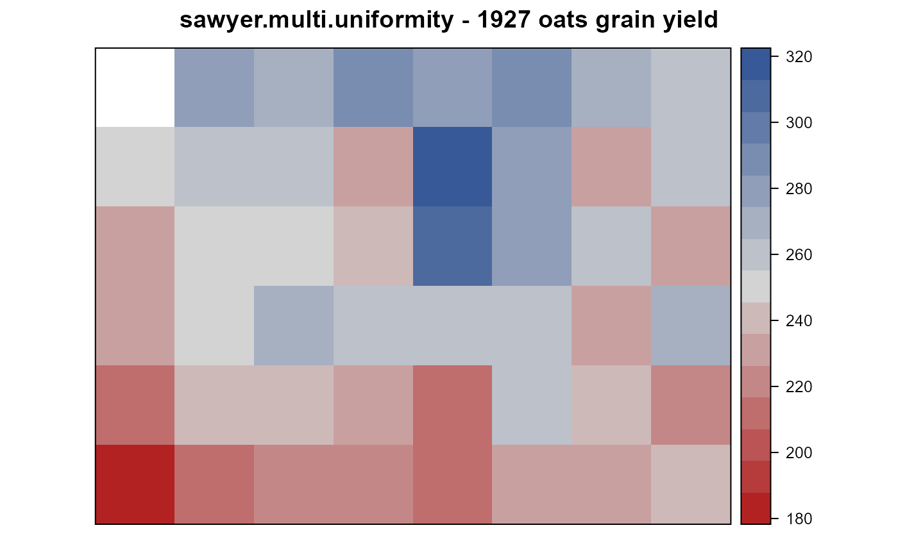
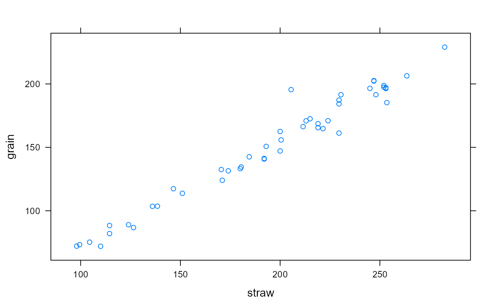

sawyer.multi.uniformity.RdUniformity trials of wheat, swedes, oats at Rothamsted, England, 1925-1927.
data("sawyer.multi.uniformity")
A data frame with 48 observations on the following 7 variables.
yearyear
cropcrop
rowrow
colcolumn
grainwheat/oats grain weight, pounds
strawwheat/oats straw weight, pounds
leafwtswedes leaf weight, pounds
rootwtswedes root weight, pounds
rootctswedes root count
An experiment conducted at Rothamsted, England, in 1925-1927, in Sawyers Field.
Row 6, column 1 was not planted in any year.
Wheat was harvested in 1925. Row 1, column 1 had partially missing data for the wheat values in 1925 and was not used in the Rothamsted summary statistics on page 155.
Swedes were harvested in 1926.
Oats were harvested in 1927.
Note the summaries statistics at the bottom of the page in each report are calibrated to ACRES.
Field width: 8 plots * 22 feet = 528 feet
Field length: 6 plots * 22 feet = 396 feet
The field is 8 plots wide, 6 plots long. The plots are drawn in the source documents as squares .098 acres each (1 chain = 66 feet on each side).
Eden & Maskell (page 165) say the field was clover, and ploughed in the autumn of 1924. The field was laid out uniformly in lands of one chain width and each plot width made to coincide with the land width from ridge to ridge. The length of each plot was also one chain and from the point of view of yield data the trial comprised 47 plots in 8x6 except that the run of the hedge only allowed a rank of five plots at one of the ends.
Rothamsted Experimental Station, Report 1925-26. Lawes Agricultural Trust, p. 154-155. https://www.era.rothamsted.ac.uk/eradoc/book/84
Rothamsted Experimental Station, Report 1927-1928. Lawes Agricultural Trust, p. 153. https://www.era.rothamsted.ac.uk/eradoc/article/ResReport1927-28-131-175
Eden, T. and E. J. Maskell. (1928). The influence of soil heterogeneity on the growth and yield of successive crops. Jour of Agricultural Science, 18, 163-185. https://archive.org/stream/in.ernet.dli.2015.25895/2015.25895.Journal-Of-Agricultural-Science-Vol-xviii-1928#page/n175
McCullagh, P. and Clifford, D., (2006). Evidence for conformal invariance of crop yields, Proceedings of the Royal Society A: Mathematical, Physical and Engineering Science, 462, 2119--2143. https://doi.org/10.1098/rspa.2006.1667
Winifred A. Mackenzie. (1926) Note on a remarkable correlation between grain and straw, obtained at Rothamsted. Journal of Agricultural Science, 16, 275-279. https://doi.org/10.1017/S0021859600018256
# \dontrun{ library(agridat) data("sawyer.multi.uniformity") dat <- sawyer.multi.uniformity libs(desplot) # The field plan shows square plots desplot(dat, grain~col*row, subset= year==1925, main="sawyer.multi.uniformity - 1925 wheat grain yield", aspect=(6)/(8)) # true aspectdesplot(dat, rootwt~col*row, subset= year==1926, main="sawyer.multi.uniformity - 1926 root weight of swedes", aspect=(6)/(8))desplot(dat, grain~col*row, subset= year==1927, main="sawyer.multi.uniformity - 1927 oats grain yield", aspect=(6)/(8))# This plot shows the "outlier" in the wheat data reported by Mackenzie. libs(lattice) xyplot(grain ~ straw, data=subset(dat, year==1925))#> leafwt rootwt rootct #> leafwt 1.00 0.66 0.47 #> rootwt 0.66 1.00 0.43 #> rootct 0.47 0.43 1.00## leafwt rootwt rootct ## leafwt 1.00 0.66 0.47 ## rootwt 0.66 1.00 0.43 ## rootct 0.47 0.43 1.00 ## pairs(dat[,7:9], ## main="sawyer.multi.uniformity") # }